When developing any kind of application testing is very important, and making use of testing tools is something that if implemented correctly can help make our completed better, as well as saving times and resources during development.
Using these testing tools in tandem with CI/CD tools like GitHub actions allows us to automate the process of testing with every build that we create whilst also allowing us to identify issues with commits very early.
It is not only software development tools that support this process however, Unity also has their own unit testing platform named Unity Test Runners, which after set up allow you to automatically test your for errors.
To use Test Runners in Unity the first thing we need to do is get access to the test runner package - from the main Unity screen we do this by pressing the window button and then package manager, which should open up the package manager window.
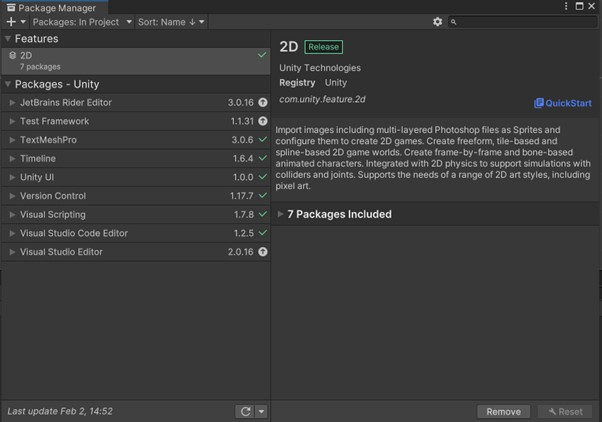Click the drop down at the top left-hand side of the package manager window and change the package location from “in Project” to be “Unity Registry”
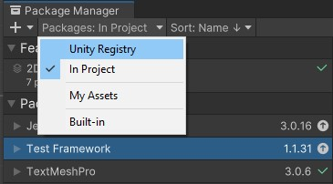When you have done this you then need to navigate to the top right hand side of the package manager window, and search for the worst test in the provided search bar. One of the results should be the “Test Framework” package. This is the one you want.
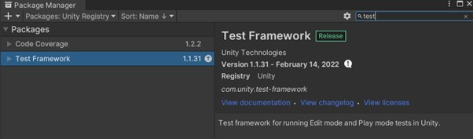Navigate to the install button at the bottom of the screen and allow the package manager to go through the process of installing the test framework.

Depending on the version of Unity that you have installed the test framework may have come as part of your installation. If this is the case you may notice that the install button is replaced with one that says update, alongside the version you would be updating to. Select this button in the same way as the install button to ensure that you have the most up to date version of Unity’s test tools.
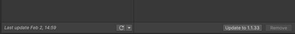To check the test framework has been installed successfully change the top left packages drop down back to “in project” and you should be able to see it in the list with a tick next to it, this indicates it has been successfully installed.
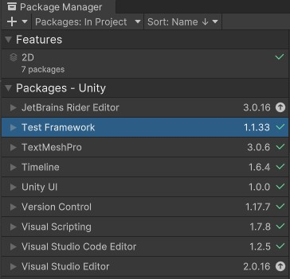Now we have added the test runner package to our project we have to now set it up so that it can be used with our project.
To do this we need to once again access the window option from the Unity menu at the top of the screen, and this time we are going to hover over “general” and then select “test runner”
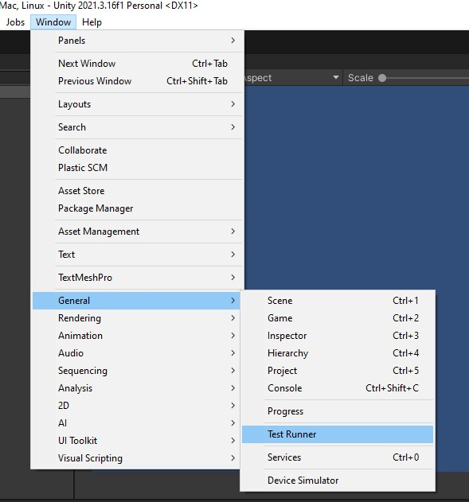This will then bring up the Test Runner window, which we are going to use to run our tests in once we have created them.
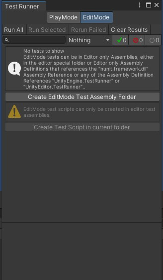As you can see there are two options for the types of test that we are going to complete, these options are to run tests in either edit mode, or play mode.
For the sake of this demonstration we are looking to test the game whilst it is running, so select play mode from the options at the top.
I would also suggest taking the test runner and dragging it to an easily accessible place within the Unity UI – I like to have it next to Scene and Game mode at the top of the screen.
Once you have selected Play Mode from the options at the top of the window we are then going to press the “Create Play Mode Test Assembly Folder” button – this will create a folder for us within our asset folder called tests that contains an assembly file called “tests.asmdef”
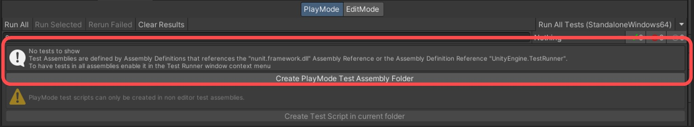 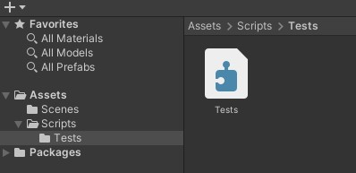Before we can start running tests our test runner needs access to our games code. In order to do this, we need to create a new assembly that will hold the information about our game within it.
To do this return to your assets folder and right click, highlighting create and then assembly definition.
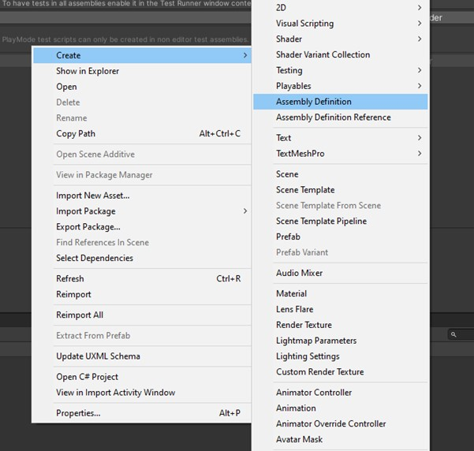Name your newly created assembly “GameAssembly” this is an assembly that holds all of the information about your created project, including the code.
We now need to give your test runner access to our newly created assembly, to do this navigate back to yours test assembly in Scripts->Tests, select your tests assembly and the inspector should change to show all of the information about your assembly.
Within this section you then want to navigate to the “Use GUIDs” section which should be around the middle of the inspector.
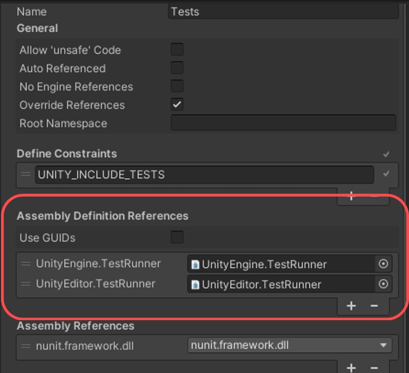Press the Plus (+) button at the bottom of this Window and you will notice that a new reference has been created.
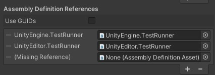Press the “target” button next to your newly created reference and search for your game assembly using the provided search bar.
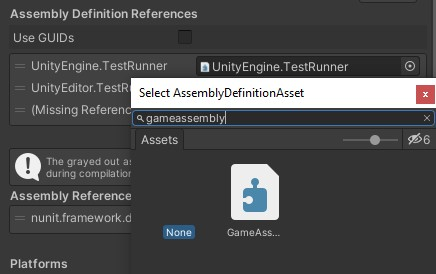When you locate your game assembly click on it and it will be added to the reference, your tests can now see your code!
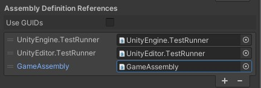Still within the “Test” folder navigate back to your test runner and click the “create test script in the current folder” button to generate a test script in your tests folder.
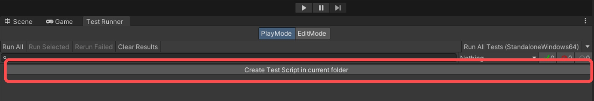Give your test script a good name and open it in Visual Studio. From here you should be greeted with the standard Unity code for testing purposes.
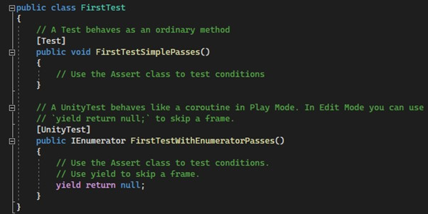Tests are created here in a similar way to the unit testing you have done previously.
SimplePasses() tend be done when you need to check something quickly to ensure that it is correct. And EnumeratorPasses() are done when you wish to test a series of events in a set order as EnumeratorPasses() will run over multiple frames.
Using the knowledge of unit testing you have learnt previously create some tests for your Unity program. For the sake of this demonstration, I am going to be creating a simple test that will check and see if the name of a spawned object is correct.
If you need help practicing tests please refer to the previous lab, for more help with testing in Unity there are further resources and guides that can be found here: https://docs.unity3d.com/Packages/com.unity.test-framework@1.3/manual/course/welcome.html
Save your tests and return to the Unity window, and if you still have the test runner open you will notice that is UI has changed to represent the tests that are still available within your program.
Open all of the dropdowns and depending on how many tests/test scripts you created you should see something similar to this.
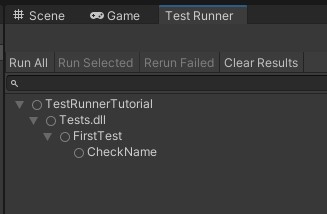To run our tests and check to see if they are implemented correctly (and if our game as pass them) press the “run all” button located at the top left hand side of the window.
This will automatically put your game into Play Mode and will run any tests that are currently attached to it.
If Unity automatically redirected you to the game mode window click back on the Test runner and you should be able to see the results of your test.
Tests that have passed will have a green tick to them, and tests that have failed will be represented by a green tick.
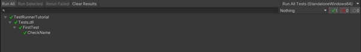That’s it! You’ve just created and ran your first tests in Unity. If you combine these tests with the CICD tools found in the “automation in GitHub” tutorial, you will be able to upload your builds and automate your testing with them in GitHub! :)